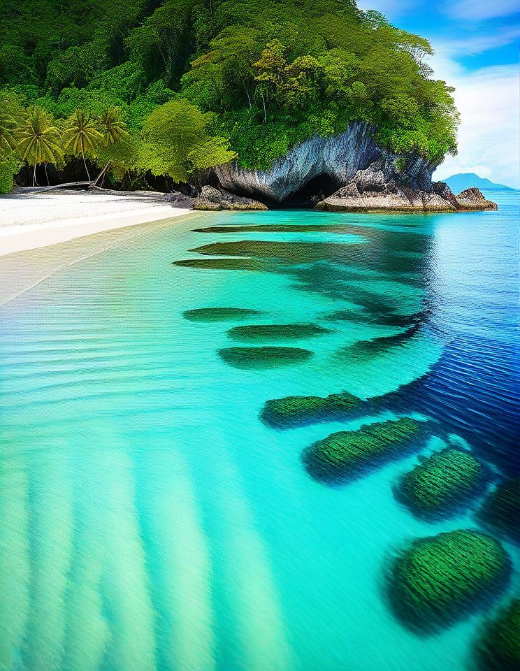
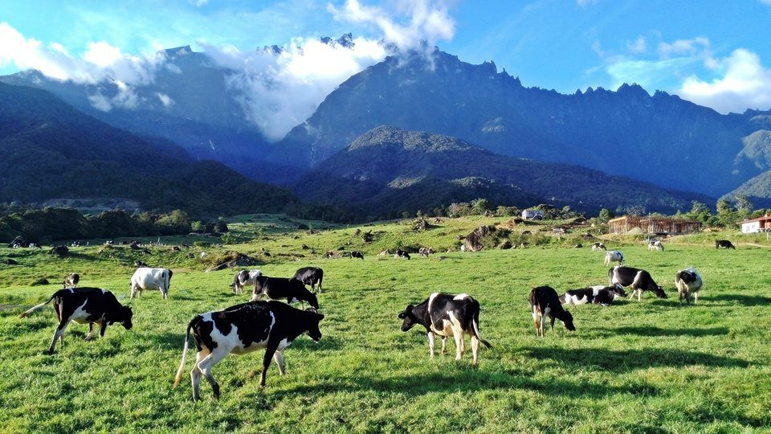
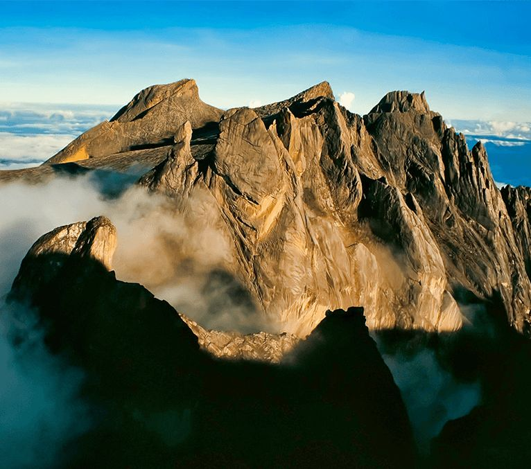

Tempat Menarik
4 destinasi pilihan di Sabah yang wajib anda lawati untuk pengalaman yang tidak dapat dilupakan.

Taman laut tunku Abdul Rahman
Terletak di Kota Kinabalu. Pulau yang terkenal dengan pantai berpasir putih dan terdapat beberapa pulau yang menarik
KETAHUI LAGI →
Kundasang
Terletak di Kundasang. Dijuluki "New Zealand Sabah" dengan pemandangan gunung, ladang tenusu dan udara sejuk yang menyegarkan.
KETAHUI LAGI →
Pulau Semporna
Terletak di Semporna. Syurga untuk penyelam skuba dan "muck diving". Rumah kepada hidupan laut unik dan resort atas air.
KETAHUI LAGI →
Gunung Kinabalu
Gunung Kinabalu ialah gunung tertinggi di Malaysia dengan ketinggian 4,095 meter dan terletak di Ranau, Sabah.
KETAHUI LAGI →